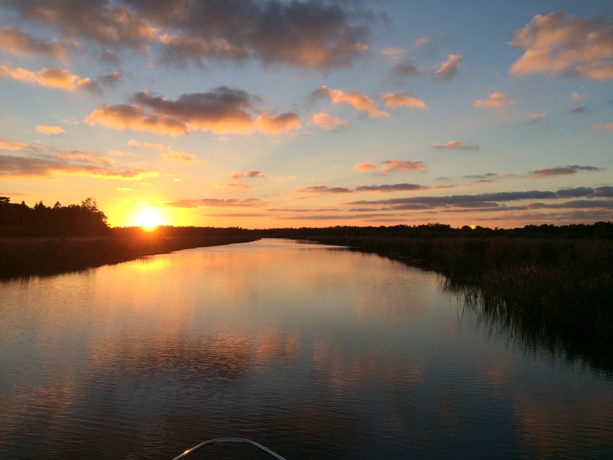

Norfolk Broads Charter

Chartered Boat Hire on the Norfolk Broads
Experience the Norfolk Broads from a stunning 26 foot sports cruiser. Charter your own luxury trip taking in the beautiful surroundings of the Norfolk Broads. The charter comes with your own fully qualified skipper who will provide you with a tour of the most stunning areas on the Northern rivers and broads such as Hunsett Mill and How Hill National Nature Reserve near Ludham.
The Broads lies in the counties of Norfolk and Suffolk in the east of England. At 303 sq km it is Britain's largest nationally protected wetland and a member of the international family of national parks. There's always something different to see depending on the season. You might catch sight of a swallowtail butterfly or even an otter.